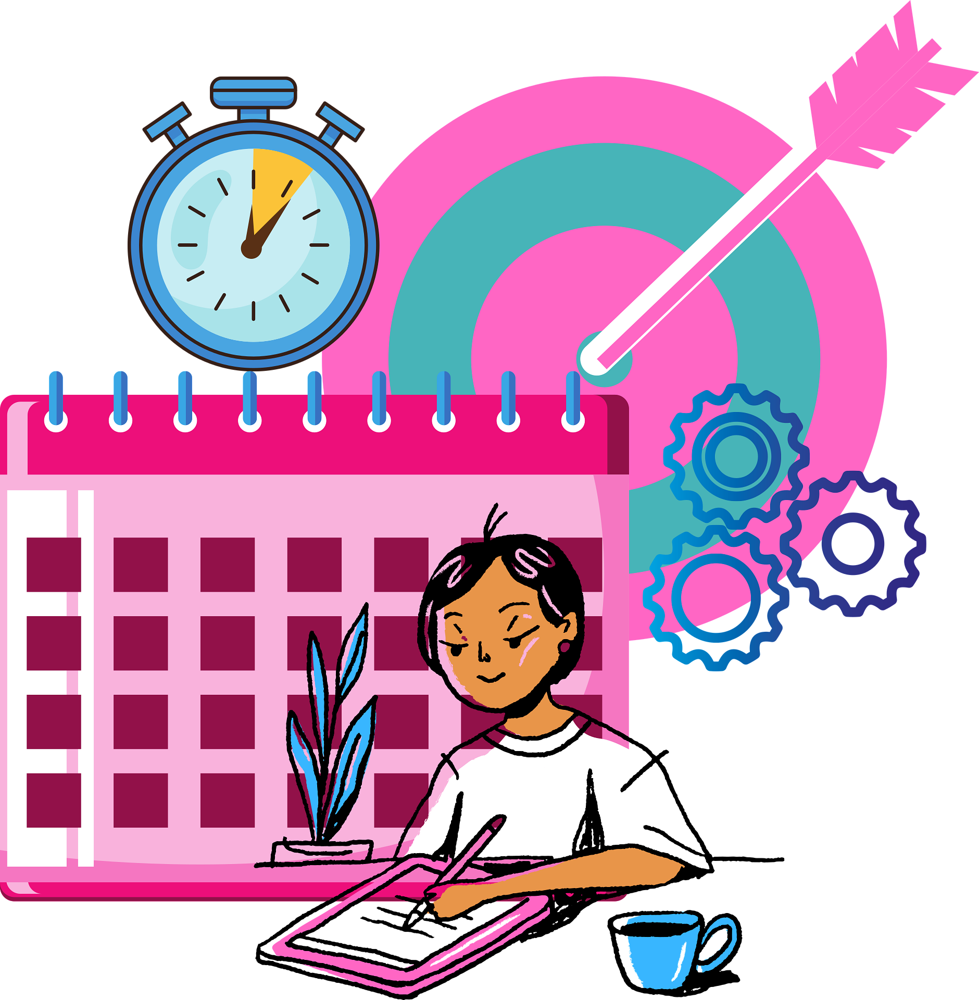
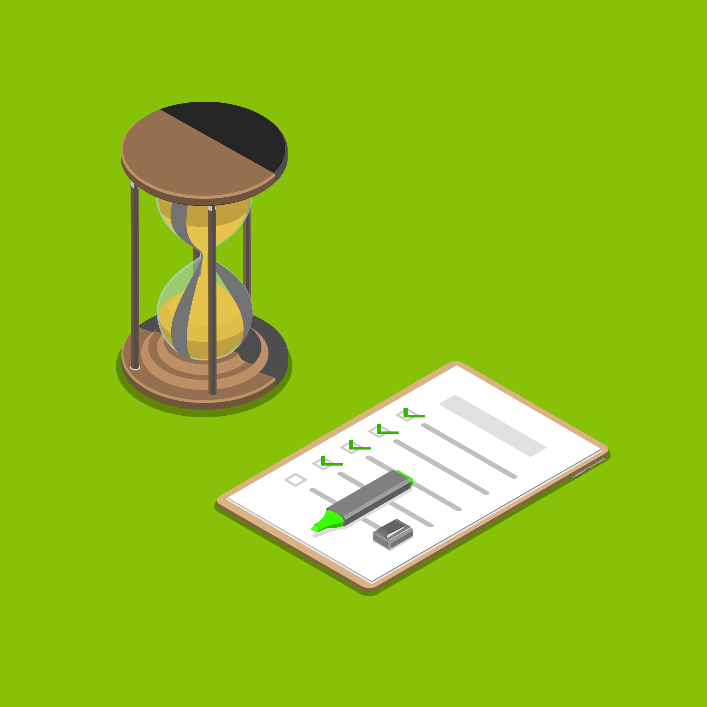

<link rel="stylesheet" href="style.css">

<link rel="icon" href="/images/favicon.ico" type="image/x-icon">

<link rel="stylesheet" href="style.css">

<header class="main-header">
  <div class="logo">
    <a href="index.html" class="logo-link">
      
      <span>ClarityBased</span>
    </a>
  </div>
  <nav class="nav-menu">
    <a href="SelfGrow.html">Self-Growth</a>
    <a href="CareerFinance.html">Career & Finance</a>
    <a href="Relationships.html">Relationships</a>
    <a href="MindTraining.html">Mind Training</a>
    <a href="WellnessPsychology.html">Wellness & Psychology</a>
  </nav>
</header>


<!-- პირველი ბლოკი -->
<section class="hero-card">
  <div class="hero-left">
    
  </div>
  <div class="hero-right">
    <h2>Start Your Day Right – Your Morning Routine Blueprint</h2>
    <ul>
      <li>1. Don’t start your day with your phone<br> The first 15 minutes of your morning should belong to you, not notifications.</li>
      <li>2. One glass of water + 10 deep breaths<br> Rehydrate, breathe — give your brain a signal that it’s time to rise.</li>
      <li>3. Write down ONE goal for the day<br> Not a long to-do list. Just one thing that really matters today.</li>
      <li>4. Stop hitting snooze (even on weekends)<br> The more you snooze your alarm, the more you snooze your life.</li>
      <li>5. Create a morning plan — before you need it<br> Don’t leave it to morning you. Your brain loves automation.</li>
    </ul>

    <div class="hero-footer">
      <div class="hero-note">
        <p>30 minutes in the morning makes all the difference in your day — let me show you how.</p>
      </div>
      <div class="hero-button">
        <a class="cta-button" href="https://claritybased.gumroad.com/l/qgbnwv">See in detail <span>$4.99</span></a>
      </div>
    </div>
</section>

<div class="challenge-container">
  <div class="hero-left">
    
  </div>
  <div class="hero-right">
    <h2>Hit Your Goal in 21 Days — One Challenge, One You</h2>
    <ol>
      <li><strong>Pick ONE goal — not ten</strong><br>Trying to do everything at once is why you’ve failed before. In this challenge, you’ll focus on just one meaningful goal for 21 days. That’s your mission.</li>
      <li><strong>Use the Rule of 3</strong><br>Every day, take 3 small actions — no more, no less. Big changes don’t need big steps. They need consistency.</li>
      <li><strong>Track progress visually</strong><br>Mark each day you show up. What gets tracked gets done — and progress feels addictive when you can see it.</li>
      <li><strong>Build your “why” wall</strong><br>Write down why this goal matters to you. Keep it visible. When motivation drops, your “why” will carry you.</li>
      <li><strong>Don’t break the chain</strong><br>Once you start, don’t stop. Even 5 minutes a day counts — the only rule: show up daily. That’s how momentum builds.</li>
    </ol>
    <div class="cta">
      <p>21 days from now, you could be closer to your goal — or still thinking about it. Which one will it be?</p>
      <a class="cta-button" href="https://claritybased.gumroad.com/l/shunxt">See the challenge plan <span>$4.99</span></a>
    </div>
  </div>
</div>


<div class="challenge-container">
  <div class="hero-left">
    
  </div>
  <div class="hero-right">
    <h2>Build Unshakable Discipline – Master Yourself, 
Master Your Life</h2>
    <ol>
      <li><strong>Start with one non-negotiable habit</strong><br>Don’t try to change everything. Just choose one thing you’ll do daily — no excuses.
Discipline starts with keeping one promise to yourself.</li>
      <li><strong>Show up even when it’s boring</strong><br>Motivation fades. Discipline means doing it even when you don’t feel like it.
That’s when it actually counts.</li>
      <li><strong>Make it stupidly easy to win</strong><br>Want to read every day? Start with 2 pages.
Lower the barrier until it feels silly not to do it.</li>
      <li><strong>Track your consistency</strong><br>Use a calendar, app, or notebook.
When you see your streak grow, it keeps you going.</li>
      <li><strong>Identity first, action second</strong><br>Say “I’m the kind of person who works out daily” — and then act like it.
Discipline is about becoming, not just doing.</li>
    </ol>
    <div class="cta">
      <p>Discipline isn’t talent — it’s a system anyone can build. Ready to train yours, 
step by step?</p>
      <a class="cta-button" href="https://claritybased.gumroad.com/l/srkfsx">Get the habit system <span>$3.99</span></a>
    </div>
  </div>
</div>


<div class="challenge-container">
  <div class="hero-left">
    
  </div>
  <div class="hero-right">
    <h2>Stop Wasting Time – Reclaim Your Focus, Reclaim Your Life</h2>
    <ol>
      <li><strong>Notice where time really goes</strong><br>
        You're not bad with time — you're just not tracking it. Try writing down what you do for one day. The truth will shock you (and help you fix it).</li>
      <li><strong>Set ‘no-scroll’ hours</strong><br>
        Create zones in your day where social media is simply off-limits. You'll be amazed how much mental space it clears.</li>
      <li><strong>Start with one needle-moving task</strong><br>
        Every morning, ask: What’s the one thing that actually matters today? Then do that first — before distractions win.</li>
      <li><strong>Batch the small stuff</strong><br>
        Emails, messages, errands — don’t scatter them through your day. Group them. Limit them. Protect your deep work time.</li>
      <li><strong>Give your time a job</strong><br>
        If you don’t assign your hours, someone else will. Even free time deserves a purpose — rest, read, recover, not scroll endlessly.</li>
    </ol>
    <div class="cta">
      <p>Your time is your power. You’re not “too busy” — your time just needs better direction.</p>
      <a class="cta-button" href="https://claritybased.gumroad.com/l/nohvp">Ready to take it back? <span>$4.99</span></a>
    </div>
  </div>
</div>


<div class="challenge-container">
  <div class="hero-left">
    
  </div>
  <div class="hero-right">
    <h2>Declutter Your Digital Life – Make Space to Think Again</h2>
    <ol>
      <li><strong>Start with what you open first — not your wallpaper</strong><br>
        Forget changing your background. Ask yourself: what’s the first thing I tap every morning? If it stresses you out, move it, mute it, or just delete it.</li>
      <li><strong>Unsubscribe like your peace depends on it</strong><br>
        All those emails you keep ignoring? They pile up mentally too. Spend 10 minutes clearing them out — it’s weirdly satisfying.</li>
      <li><strong>Turn off the pings you don’t need</strong><br>
        Every little buzz steals a bit of your focus. Your attention’s worth more than that. Keep only the notifications that truly matter.</li>
      <li><strong>Build a calm home screen</strong><br>
        Just keep the few apps you use every day — and hide the rest. You don’t need to be one swipe away from distraction all the time.</li>
      <li><strong>Log out of the app you check 100 times a day</strong><br>
        Even that tiny friction — having to log in — can help you break the reflex. Freedom starts with small breaks in the loop.</li>
    </ol>
    <div class="cta">
      <p>Your mind lives in your phone more than you think. Make it a calm place — not chaos.</p>
      <a class="cta-button" href="https://claritybased.gumroad.com/l/thmac">Ready to clear it out? <span>$3.99</span></a>
    </div>
  </div>
</div>

<link rel="stylesheet" href="style.css">

<script src="script.js"></script>


<footer class="custom-footer">
  <div class="footer-left">
    <button class="contact-button" id="contactBtn">
      <i class="fas fa-envelope"></i> Contact Us
    </button>
  </div>

  <div class="footer-right">
    <div class="brand-info">
      
      <div>
        <h2>ClarityBased</h2>
        <p class="slogan">Find clarity. Live intentionally.</p>
      </div>
    </div>
    <p class="footer-copy">© 2025 ClarityBased. All rights reserved.</p>
  </div>
</footer>


<div id="contactModal" class="modal">
  <div class="modal-content">
    <span id="closeModal" class="close">&times;</span>
    <h2>Contact Us</h2>
    <form action="https://formspree.io/f/mldnyaoo" method="POST">
      <input type="text" name="name" placeholder="Your Name" required />
      <input type="email" name="email" placeholder="Your Email" required />
      <textarea name="message" placeholder="Your Message" required></textarea>
      <button type="submit">Send</button>
    </form>
  </div>
</div>
